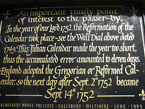

Enter a year between 1583 and 25000: Display style:
This page makes printable calendars for any year between 1583 and 25000. The calendar system it uses is called the Gregorian Calendar, which is the ‘standard’ internationally accepted calendar.
The Gregorian Calendar was introduced by Pope Gregory XIII in 1582, as a correction to the widely followed Julian calendar, when it became apparent that Easter was in grave danger of turning into a Summer festival. With help from the Jesuit astronomer Christoph Clavius (after whom a large moon crater is named), he extended the Julian leap-year concept by saying that years divisible by 100 but not by 400 were not leap years (e.g., 1700, 1800 and 1900 weren't leap years but 2000 is).
This created a calendar without any accuracy problems upto about 33000 CE. However, the Gregorian calendar was initially adopted only in Catholic European countries. So don't expect very early dates generated by this program to match those in national calendars of many countries — notably Russia (upto 1919) and Britain (upto September 1752). Here is a readable brief history of the development of the Gregorian calendar.
This page uses Javascript extensively and needs a modern browser to work (the latest version of Firefox or Chrome will work well). If you have an older browser, you can try an older version of this page.
© 2009-2010 Prasenjeet Dutta. Terms of Use
|
Home